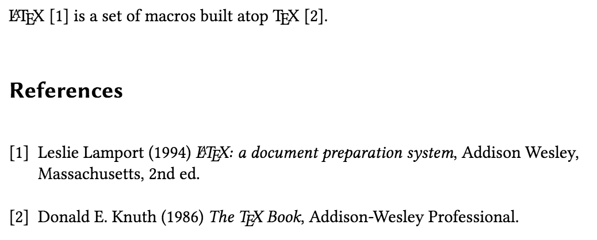
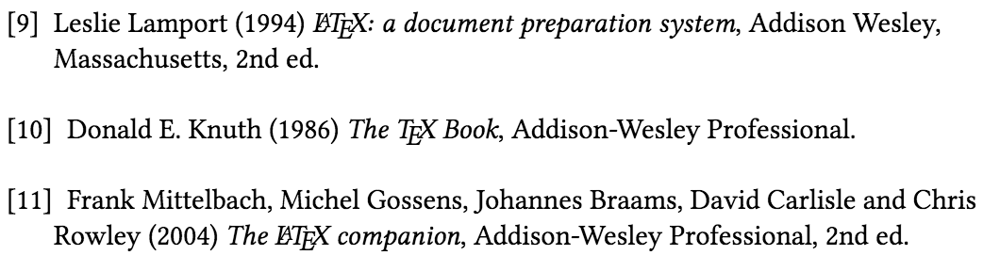
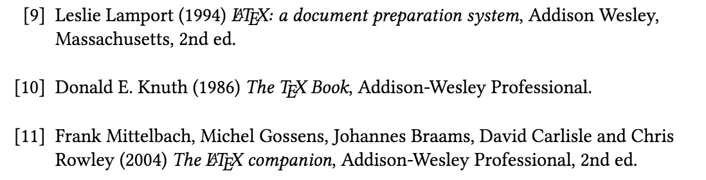
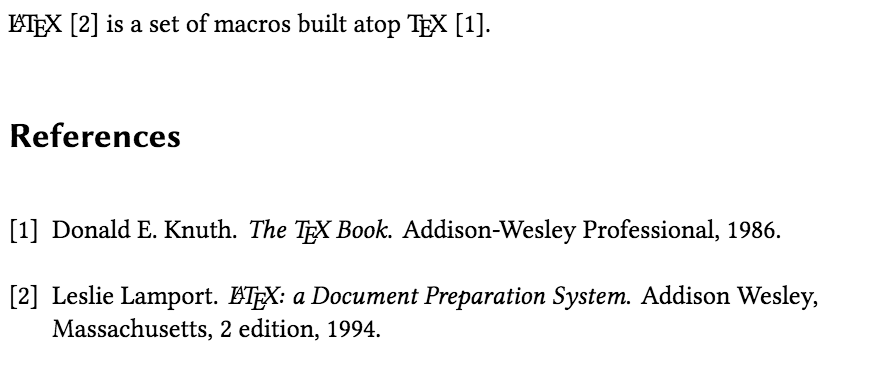
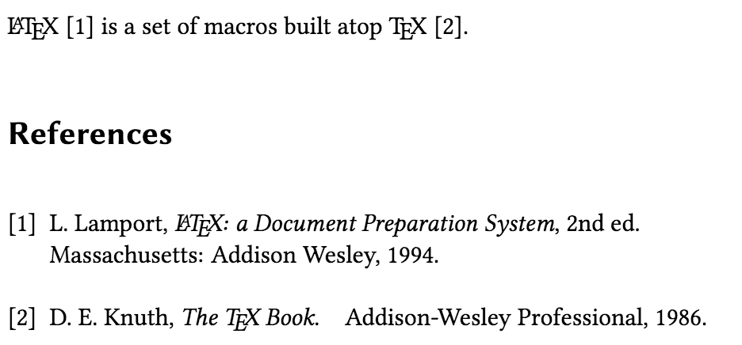

Bibliography management with bibtex
Advisory note
If you are starting from scratch we recommend using biblatex because that package provides localization in several languages, it’s actively developed and makes bibliography management easier and more flexible.
Introduction
Many tutorials have been written about what \(\mathrm{Bib\TeX}\) is and how to use it. However, based on our experience of providing support to Overleaf’s users, it’s still one of the topics that many newcomers to \(\mathrm{\LaTeX}\) find complicated—especially when things don’t go quite right; for example: citations aren’t appearing; problems with authors’ names; not sorted to a required order; URLs not displayed in the references list, and so forth.
In this article we’ll pull together all the threads relating to citations, references and bibliographies, as well as how Overleaf and related tools can help users manage these.
We’ll start with a quick recap of how \(\mathrm{Bib\TeX}\) and bibliography database (.bib) files work and look at some ways to prepare .bib files. This is, of course, running the risk of repeating some of the material contained in many online tutorials, but future articles will expand our coverage to include bibliography styles and biblatex—the alternative package and bibliography processor.
Bibliography: just a list of \bibitems
Let’s first take a quick look “under the hood” to see what a \(\mathrm{\LaTeX}\) reference list is comprised of—please don’t start coding your reference list like this because later in this article we’ll look at other, more convenient, ways to do this.
A reference list really just a thebibliography list of \bibitems:
\begin{thebibliography}{9}
\bibitem{texbook}
Donald E. Knuth (1986) \emph{The \TeX{} Book}, Addison-Wesley Professional.
\bibitem{lamport94}
Leslie Lamport (1994) \emph{\LaTeX: a document preparation system}, Addison
Wesley, Massachusetts, 2nd ed.
\end{thebibliography}
By default, this thebibliography environment is a numbered list with labels [1], [2] and so forth. If the document class used is article, \begin{thebibliography} automatically inserts a numberless section heading with \refname (default value: References). If the document class is book or report, then a numberless chapter heading with \bibname (default value: Bibliography) is inserted instead. Each \bibitem takes a cite key as its parameter, which you can use with \cite commands, followed by information about the reference entry itself. So if you now write
\LaTeX{} \cite{lamport94} is a set of macros built atop \TeX{} \cite{texbook}.
together with the thebibliography block from before, this is what gets rendered into your PDF when you run a \(\mathrm{\LaTeX}\) processor (i.e. any of latex, pdflatex, xelatex or lualatex) on your source file:

Figure 1: Citing entries from a thebibliography list.
Notice how each \bibitem is automatically numbered, and how \cite then inserts the corresponding numerical label.
\begin{thebibliography} takes a numerical argument: the widest label expected in the list. In this example we only have two entries, so 9 is enough. If you have more than ten entries, though, you may notice that the numerical labels in the list start to get misaligned:

Figure 2: thebibliography with a label that’s too short.
We’ll have to make it \begin{thebibliography}{99} instead, so that the longest label is wide enough to accommodate the longer labels, like this:

Figure 3: thebibliography with a longer label width.
If you compile this example code snippet on a local computer you may notice that after the first time you run pdflatex (or another \(\mathrm{\LaTeX}\) processor), the reference list appears in the PDF as expected, but the \cite commands just show up as question marks [?].
This is because after the first \(\mathrm{\LaTeX}\) run the cite keys from each \bibitem (texbook, lamport94) are written to the .aux file and are not yet available for reading by the \cite commands. Only on the second run of pdflatex are the \cite commands able to look up each cite key from the .aux file and insert the corresponding labels ([1], [2]) into the output.
On Overleaf, though, you don’t have to worry about re-running pdflatex yourself. This is because Overleaf uses the latexmk build tool, which automatically re-runs pdflatex (and some other processors) for the requisite number of times needed to resolve \cite outputs. This also accounts for other cross-referencing commands, such as \ref and \tableofcontents.
A note on compilation times
Processing \(\mathrm{\LaTeX}\) reference lists or other forms of cross-referencing, such as indexes, requires multiple runs of software—including the \(\mathrm{\TeX}\) engine (e.g., pdflatex) and associated programs such as \(\mathrm{Bib\TeX}\), makeindex, etc. As mentioned above, Overleaf handles all of these mulitple runs automatically, so you don’t have to worry about them. As a consequence, when the preview on Overleaf is refreshing for documents with bibliographies (or other cross-referencing), or for documents with large image files (as discussed separately here), these essential compilation steps may sometimes make the preview refresh appear to take longer than on your own machine. We do, of course, aim to keep it as short as possible! If you feel your document is taking longer to compile than you’d expect, here are some further tips that may help.
Enter \(\mathrm{Bib\TeX}\)
There are, of course, some inconveniences with manually preparing the thebibliography list:
- It’s up to you to accurately format each
\bibitembased on the reference style you’re asked to use—which bits should be in bold or italic? Should the year come immediately after the authors, or at the end of the entry? Given names first, or last names first? - If you’re writing for a reference style which requires the reference list to be sorted by the last names of first authors, you’ll need to sort the
\bibitems yourself. - For different manuscripts or documents that use different reference styles you’ll need to rewrite the
\bibitemfor each reference.
This is where \(\mathrm{Bib\TeX}\) and bibliography database files (.bib files) are extremely useful, and this is the recommended approach to manage citations and references in most journals and theses. The biblatex approach, which is slightly different and gaining popularity, also requires a .bib file but we’ll talk about biblatex in a future post.
Instead of formatting cited reference entries in a thebibliography list, we maintain a bibliography database file (let’s name it refs.bib for our example) which contains format-independent information about our references. So our refs.bib file may look like this:
@book{texbook,
author = {Donald E. Knuth},
year = {1986},
title = {The {\TeX} Book},
publisher = {Addison-Wesley Professional}
}
@book{latex:companion,
author = {Frank Mittelbach and Michel Gossens
and Johannes Braams and David Carlisle
and Chris Rowley},
year = {2004},
title = {The {\LaTeX} Companion},
publisher = {Addison-Wesley Professional},
edition = {2}
}
@book{latex2e,
author = {Leslie Lamport},
year = {1994},
title = {{\LaTeX}: a Document Preparation System},
publisher = {Addison Wesley},
address = {Massachusetts},
edition = {2}
}
@article{knuth:1984,
title={Literate Programming},
author={Donald E. Knuth},
journal={The Computer Journal},
volume={27},
number={2},
pages={97--111},
year={1984},
publisher={Oxford University Press}
}
@inproceedings{lesk:1977,
title={Computer Typesetting of Technical Journals on {UNIX}},
author={Michael Lesk and Brian Kernighan},
booktitle={Proceedings of American Federation of
Information Processing Societies: 1977
National Computer Conference},
pages={879--888},
year={1977},
address={Dallas, Texas}
}
You can find more information about other \(\mathrm{Bib\TeX}\) reference entry types and fields here—there’s a huge table showing which fields are supported for which entry types. We’ll talk more about how to prepare .bib files in a later section.
Now we can use \cite with the cite keys as before, but now we replace thebibliography with a \bibliographystyle{...} to choose the reference style, as well as \bibliography{...} to point \(\mathrm{Bib\TeX}\) at the .bib file where the cited references should be looked-up.
\LaTeX{} \cite{latex2e} is a set of macros built atop \TeX{} \cite{texbook}.
\bibliographystyle{plain} % We choose the "plain" reference style
\bibliography{refs} % Entries are in the refs.bib file
This is processed with the following sequence of commands, assuming our \(\mathrm{\LaTeX}\) document is in a file named main.tex (and that we are using pdflatex):
pdflatex mainbibtex mainpdflatex mainpdflatex main
and we get the following output:

Figure 4: \(\mathrm{Bib\TeX}\) output using the plain bibliography style.
Whoah! What’s going on here and why are all those (repeated) processes required? Well, here’s what happens.
During the first
pdflatexrun, allpdflatexsees is a\bibliographystyle{...}and a\bibliography{...}frommain.tex. It doesn’t know what all the\cite{...}commands are about! Consequently, within the output PDF, all the\cite{...}commands are simply rendered as [?], and no reference list appears, for now. Butpdflatexwrites information about the bibliography style and.bibfile, as well as all occurrences of\cite{...}, to the filemain.aux.-
It’s actually
main.auxthat \(\mathrm{Bib\TeX}\) is interested in! It notes the.bibfile indicated by\bibliography{...}, then looks up all the entries with keys that match the\cite{...}commands used in the.texfile. \(\mathrm{Bib\TeX}\) then uses the style specified with\bibliographystyle{...}to format the cited entries, and writes a formattedthebibliographylist into the filemain.bbl. The production of the.bblfile is all that’s achieved in this step; no changes are made to the output PDF. -
When
pdflatexis run again, it now sees that amain.bblfile is available! So it inserts the contents ofmain.bbli.e. the\begin{thebibliography}....\end{thebibliography}into the \(\mathrm{\LaTeX}\) source, where\bibliography{...}is. After this step, the reference list appears in the output PDF formatted according to the chosen\bibliographystyle{...}, but the in-text citations are still [?]. -
pdflatexis run again, and this time the\cite{...}commands are replaced with the corresponding numerical labels in the output PDF!
As before, the latexmk build tool takes care of triggering and re-running pdflatex and bibtex as necessary, so you don’t have to worry about this bit.
Some notes on using \(\mathrm{Bib\TeX}\) and .bib files
A few further things to note about using \(\mathrm{Bib\TeX}\) and .bib files:
- You may have noticed that although
refs.bibcontained five \(\mathrm{Bib\TeX}\) reference entries, only two are included in the reference list in the output PDF. This is an important point about \(\mathrm{Bib\TeX}\): the.bibfile’s role is to store bibliographic records, and only entries that have been cited (via\cite{...}) in the.texfiles will appear in the reference list. This is similar to how only cited items from an EndNote database will be displayed in the reference list in a Microsoft Word document. If you do want to include all entries—to be displayed but without actually citing all of them—you can write\nocite{*}. This also means you can reuse the same.bibfile for all your \(\mathrm{\LaTeX}\) projects: entries that are not cited in a particular manuscript or report will be excluded from the reference list in that document. - \(\mathrm{Bib\TeX}\) requires one
\bibliographystyle{...}and one\bibliography{...}to function correctly—in future posts we’ll see how to create multiple bibliographies in the same document. If you keep getting “undefined citation” warnings, check that you have indeed included those two commands, and that the names are spelled correctly. File extensions are not usually required, but bear in mind that file names are case sensitive on some operating systems—including on Overleaf! Therefore, if you typed\bibliographystyle{IEEetran}(note the typo: “e”) instead of\bibliographystyle{IEEEtran}, or wrote\bibliography{refs}when the actual file name isRefs.bib, you’ll get the dreaded [?] as citations. - In the same vein, treat your cite keys as case-sensitive, always. Use the exact same case or spelling in your
\cite{...}as in your.bibfile. - The order of references in the
.bibfile does not have any effect on how the reference list is ordered in the output PDF: the sorting order of the reference list is determined by the\bibliographystyle{...}. For example, some readers might have noticed that, within my earlier example, the first citation in the textlatex2eis numbered [2], while the second citation in the text (texbook) is numbered [1]! Have \(\mathrm{\LaTeX}\) and \(\mathrm{Bib\TeX}\) lost the plot? Not at all: this is actually because theplainstyle sorts the reference list by alphabetical order of the first author’s last name. If you prefer a scheme where the numerical citation labels are numbered sequentially throughout the text, you’ll have to choose a bibliography style which implements this. For example, if instead we had used\bibliographystyle{IEEEtran}for that example, we’d get the following output. Notice also how the formatting of each cited item in the reference list has automatically updated to suit the IEEE’s style:

Figure 5: IEEEtran bibliography style output.
We’ll talk more about different bibliography styles, including author–year citation schemes, in a future article. For now, let’s turn our attention to .bib file contents, and how we can make the task of preparing .bib files a bit easier.
Taking another look at .bib files
As you may have noticed earlier, a .bib file contains \(\mathrm{Bib\TeX}\) bibliography entries that start with an entry type prefixed with an @. Each entry has a some key–value \(\mathrm{Bib\TeX}\) fields, placed within a pair of braces ({...}). The cite key is the first piece of information given within these braces, and every field in the entry must be separated by a comma:
@article{knuth:1984,
title={Literate Programming},
author={Donald E. Knuth},
journal={The Computer Journal},
volume={27},
number={2},
pages={97--111},
year={1984},
publisher={Oxford University Press}
}
As a general rule, every bibliography entry should have an author, year and title field, no matter what the type is. There are about a dozen entry types although some bibliography styles may recognise/define more; however, it is likely that you will most frequently use the following entry types:
@articlefor journal articles (see example above).@inproceedingsfor conference proceeding articles:
@inproceedings{FosterEtAl:2003,
author = {George Foster and Simona Gandrabur and Philippe Langlais and Pierre
Plamondon and Graham Russell and Michel Simard},
title = {Statistical Machine Translation: Rapid Development with Limited Resources},
booktitle = {Proceedings of {MT Summit IX}},
year = {2003},
pages = {110--119},
address = {New Orleans, USA},
}
@bookfor books (see examples above).@phdthesis,@masterthesisfor dissertations and theses:
@phdthesis{Alsolami:2012,
title = {An examination of keystroke dynamics
for continuous user authentication},
school = {Queensland University of Technology},
author = {Eesa Alsolami},
year = {2012}
}
@inbookis for a book chapter where the entire book was written by the same author(s): the chapter of interest is identified by a chapter number:
@inbook{peyret2012:ch7,
title={Computational Methods for Fluid Flow},
edition={2},
author={Peyret, Roger and Taylor, Thomas D},
year={1983},
publisher={Springer-Verlag},
address={New York},
chapter={7, 14}
}
@incollectionis for a contributed chapter in a book, so would have its ownauthorandtitle. The actual title of the entire book is given in thebooktitlefield; it is likely that aneditorfield will also be present:
@incollection{Mihalcea:2006,
author = {Rada Mihalcea},
title = {Knowledge-Based Methods for {WSD}},
booktitle = {Word Sense Disambiguation: Algorithms
and Applications},
publisher = {Springer},
year = {2006},
editor = {Eneko Agirre and Philip Edmonds},
pages = {107--132},
address = {Dordrecht, the Netherlands}
}
@miscis for whatever doesn’t quite fit any other entry type. It can be especially useful for web pages—by writing note = \url{http://...} or url = {http://...}:- you will often find it useful to add
\usepackage{url}or\usepackage{hyperref}in your.texfiles’ preamble (for more robust handling of URLs); - not all bibliography styles support the
urlfield:plaindoesn’t, butIEEEtrandoes. All styles supportnote. More on this in a future post; - you should be mindful that even web pages and
@miscentries should have anauthor, ayearand atitlefield:
- you will often find it useful to add
@misc{web:lang:stats,
author = {W3Techs},
title = {Usage Statistics of Content Languages
for Websites},
year = {2017},
note = {Last accessed 16 September 2017},
url = {http://w3techs.com/technologies/overview/content_language/all}
}
In a .bib file, commas are only used to separate the last name from the first name of an author—if the last name is written first. Individual author names are separated by and. So these are correct:
author = {Jane Doe and John Goodenough and Foo Bar}
or
author = {Doe, Jane and Goodenough, John and Bar, Foo}
But none of the following will work correctly—you’ll get weird output, or even error messages from \(\mathrm{Bib\TeX}\)! So take extra care if you are copying author names from a paper or from a web page.
author = {Jand Doe, John Goodneough, Foo Bar}
author = {Jand Doe, John Goodneough and Foo Bar}
author = {Jand Doe, John Goodneough, and Foo Bar}
Multiple-word last names
If an author’s last name is made up of multiple words separated by spaces, or if it’s actually an organisation, place an extra pair of braces around the last name so that \(\mathrm{Bib\TeX}\) will recognise the grouped words as the last name:
author = {{World Health Organisation}}
author = {Geert {Van der Plas} and John Doe}
Alternatively, you can use the Lastname, Firstname format; some users find that clearer and more readable:
author = {Van der Plas, Geert and Doe, John}
Remember: Whether the first or last name appears first in the output (“John Doe” vs “Doe, John”), or whether the first name is automatically abbreviated “J. Doe” or “Doe, J.” vs “John Doe” “J. Doe”), all such details are controlled by the \bibliographystyle.
I tried to use % to comment out some lines or entries in my .bib file, but I got lots of error messages instead?
% is actually not a comment character in .bib files! So, inserting a % in .bib files not only fails to comment out the line, it also causes some \(\mathrm{Bib\TeX}\) errors. To get \(\mathrm{Bib\TeX}\) to ignore a particular field we just need to rename the field to something that \(\mathrm{Bib\TeX}\) doesn’t recognise. For example, if you want to keep a date field around but prefer that it’s ignored (perhaps because you want \(\mathrm{Bib\TeX}\) to use the year field instead) write Tdate = {...} or the more human-readable IGNOREdate = {...}.
To get \(\mathrm{Bib\TeX}\) to ignore an entire entry you can remove the @ before the entry type. A valid reference entry always starts with a @ followed by the entry type; without the @ character \(\mathrm{Bib\TeX}\) skips the lines until it encounters another @.
How/where do I actually get those .bib files?
Edit the .bib file as plain text
Because .bib files are plain text you can certainly write them by hand—once you’re familiar with \(\mathrm{Bib\TeX}\)’s required syntax. Just make sure that you save it with a .bib extension, and that your editor doesn’t surreptitiously add a .txt or some other suffix. On Overleaf you can click on the “Files…” link at the top of the file list panel, and then on “Add blank file” to create a fresh .bib file to work on.
Pro tip: Did you know that Google Scholar search results can be exported to a \(\mathrm{Bib\TeX}\) entry? Click on the “Cite” link below each search result, and then on the “\(\mathrm{Bib\TeX}\)” option search. You can then copy the \(\mathrm{Bib\TeX}\) entry generated. Here’s a video that demonstrates the process. Note that you should always double-check the fields presented in the entry, as the automatically populated information isn’t always comprehensive or accurate!
Help from GUI-based .bib editors
Many users prefer to use a dedicated \(\mathrm{Bib\TeX}\) bibliography database editor/manager, such as JabRef or BibDesk to maintain, edit and add entries to their .bib files. Using a GUI can indeed help reduce syntax and spelling errors whilst creating bibliography entries in a \(\mathrm{Bib\TeX}\) file. If you prefer, you can prepare your .bib file on your own machine using JabRef, BibDesk or another utility, and then upload it to your Overleaf.
Pro tip: If you’d like to use the same
.bibfor multiple Overleaf projects, have a look at this help article to set up a “master project”, or this one for sharing files from Google Drive (the instructions apply to other cloud-based storage solutions, such as Dropbox).
Export from reference library services
If you click on the Upload files button above the file list panel, you'll notice some options: Import from Mendeley, and Import from Zotero. If you’re already using one of those reference library management services, Overleaf can now hook into the Web exporter APIs provided by those services to import the .bib file (generated from your library) into your Overleaf project. For more information, see the Overleaf article How to link your Overleaf account to Mendeley and Zotero.
For other reference library services that don’t have a public API, or are not yet directly integrated with Overleaf, such as EndNote or Paperpile, look for an “export to .bib” option in the application or service. Once you have a .bib file, you can then add it to your Overleaf project.
I’ve already got a reference list in a Microsoft Word/HTML/PDF file; can I somehow reuse the data without re-typing everything?
It used to be that you would have to hand-code each line into a \bibitem or an @article{...} entry (or another entry type) in a .bib file. As you can imagine, it’s not exactly a task that many people look forward to. Fortunately, these days some tools are available to help. They typically take a plain text file, e.g.
[1] J. Smith, J. Doe and F. Bar (2001) A ground-breaking study.
Journal of Amazing Research 5(11), pp. 29-34.
[2] ...
and attempt to parse the lines, converting it into a structured bibliography as a \(\mathrm{Bib\TeX}\) .bib file. For example, have a look at text2bib or Edifix. Be sure to go through the options of these tools carefully, so that they work well with your existing unstructured bibliography in plain text.
Summary and further reading
We’ve had a quick look at how \(\mathrm{Bib\TeX}\) processes a .bib bibliography database file to resolve \cite commands and produce a formatted reference list, as well as how to prepare .bib files.
Happy \(\mathrm{Bib\TeX}\)ing!
Further reading
For more information see:
Overleaf guides
- Creating a document in Overleaf
- Uploading a project
- Copying a project
- Creating a project from a template
- Using the Overleaf project menu
- Including images in Overleaf
- Exporting your work from Overleaf
- Working offline in Overleaf
- Using Track Changes in Overleaf
- Using bibliographies in Overleaf
- Sharing your work with others
- Using the History feature
- Debugging Compilation timeout errors
- How-to guides
- Guide to Overleaf’s premium features
LaTeX Basics
- Creating your first LaTeX document
- Choosing a LaTeX Compiler
- Paragraphs and new lines
- Bold, italics and underlining
- Lists
- Errors
Mathematics
- Mathematical expressions
- Subscripts and superscripts
- Brackets and Parentheses
- Matrices
- Fractions and Binomials
- Aligning equations
- Operators
- Spacing in math mode
- Integrals, sums and limits
- Display style in math mode
- List of Greek letters and math symbols
- Mathematical fonts
- Using the Symbol Palette in Overleaf
Figures and tables
- Inserting Images
- Tables
- Positioning Images and Tables
- Lists of Tables and Figures
- Drawing Diagrams Directly in LaTeX
- TikZ package
References and Citations
- Bibliography management with bibtex
- Bibliography management with natbib
- Bibliography management with biblatex
- Bibtex bibliography styles
- Natbib bibliography styles
- Natbib citation styles
- Biblatex bibliography styles
- Biblatex citation styles
Languages
- Multilingual typesetting on Overleaf using polyglossia and fontspec
- Multilingual typesetting on Overleaf using babel and fontspec
- International language support
- Quotations and quotation marks
- Arabic
- Chinese
- French
- German
- Greek
- Italian
- Japanese
- Korean
- Portuguese
- Russian
- Spanish
Document structure
- Sections and chapters
- Table of contents
- Cross referencing sections, equations and floats
- Indices
- Glossaries
- Nomenclatures
- Management in a large project
- Multi-file LaTeX projects
- Hyperlinks
Formatting
- Lengths in LaTeX
- Headers and footers
- Page numbering
- Paragraph formatting
- Line breaks and blank spaces
- Text alignment
- Page size and margins
- Single sided and double sided documents
- Multiple columns
- Counters
- Code listing
- Code Highlighting with minted
- Using colours in LaTeX
- Footnotes
- Margin notes
Fonts
Presentations
Commands
Field specific
- Theorems and proofs
- Chemistry formulae
- Feynman diagrams
- Molecular orbital diagrams
- Chess notation
- Knitting patterns
- CircuiTikz package
- Pgfplots package
- Typesetting exams in LaTeX
- Knitr
- Attribute Value Matrices
Class files
- Understanding packages and class files
- List of packages and class files
- Writing your own package
- Writing your own class